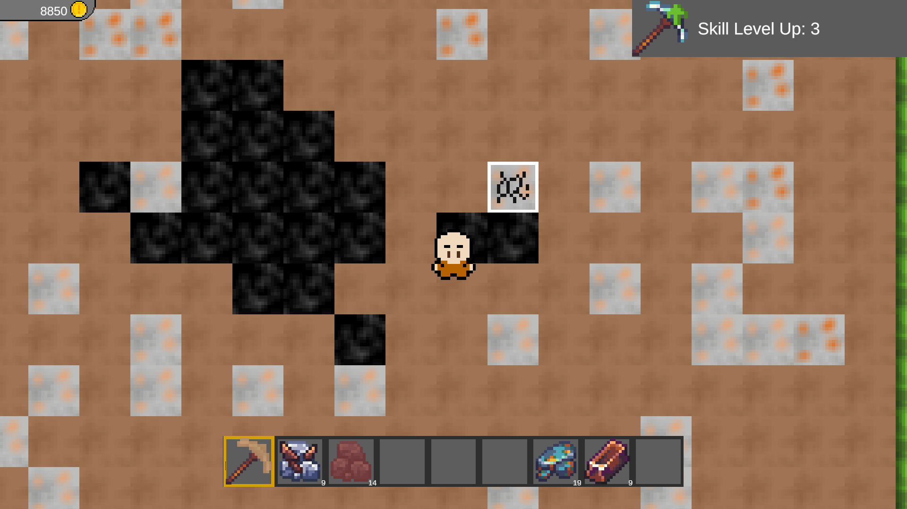
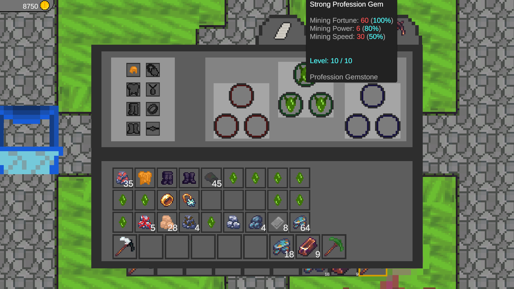
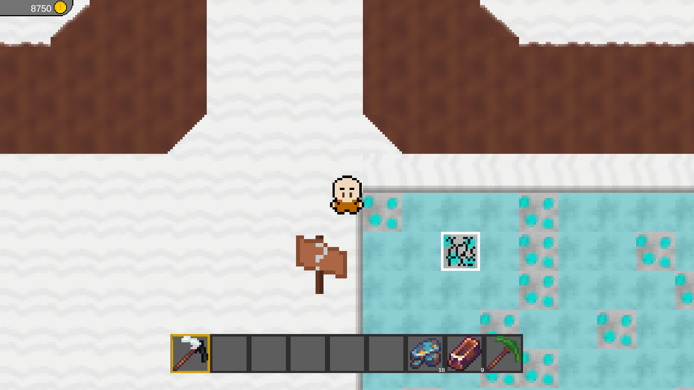
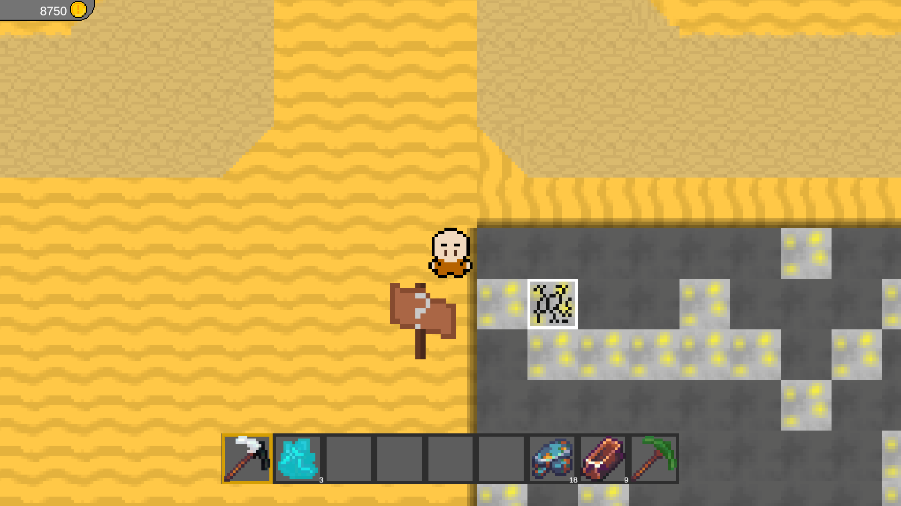
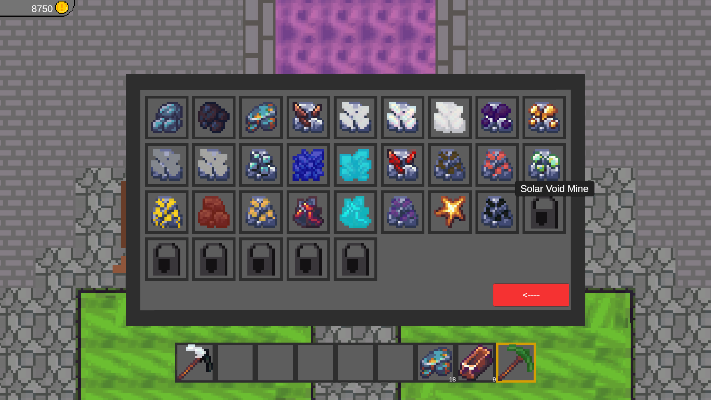
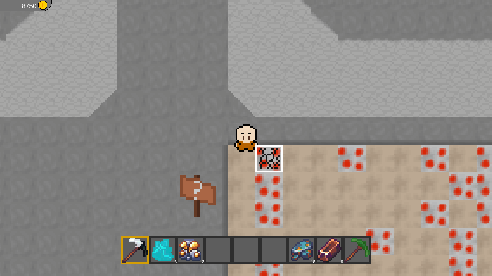
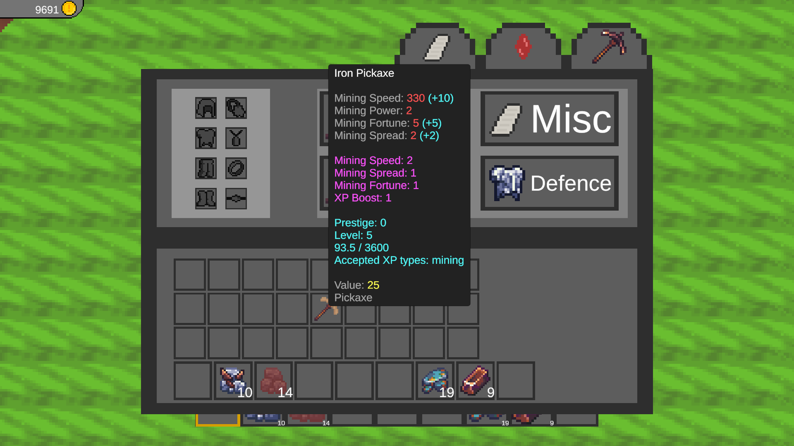

A 2D mining simulation game developed in Unity and published to Steam
Over the summer break of 2025 some friends and I had decided to work together to create a 2D game in Unity. Unfortunately the other's didn't have as much time as I did during this time so I was the only one contributing at the time. Eventually I had realise that due to the other's lack of time the game we had designed was out of scope for me to make alone, so I moved onto making Prison Miner. I told the others that I would do this but would return to the initial game if they got more free time as I would prefer to make a game that I can finish. I've always enjoyed mining games and used to play a lot of the gamemode "Prisons" on Minecraft when I was young, but that mode was always full of pay to win mechanics, so I decided what if I made a game heavily inspired on that mode without all the stuff I disliked about the mode. That is how Prison Miner begun, and after a month went into a public beta-test, where a lot of feedback was received and the people playing overall enjoyed the game greatly and helped fix a lot of bugs. Another month and a half after the beta-test it was released onto steam, where the reception was small, but those few who played it said they loved their time on the game. I kept updating the game from there on with 2 major content updates alongside minor patches between for bugs and quality of life changes. As of today I am quite busy with University, but am in the middle of a major quality of life re-work / addition update that is currently on hold until my assignments wrap up for the year.







Upon the release of the first alpha testing of the game I had realised that I struggled to figure out what was obvious to me, that may not be to others. I initially had a lot of confusion from players not understanding where to go, which was due to me thinking certain mechanics were common knowledge when it wasn't. I also struggled to balance well, either one upgrade was too weak and actually detrimental to the player's experience and progression, or there'd be another that would instantly carry the player through the entire game. This I spent a lot of time researching and ended up setting up tools via spreadsheets to more accurately estimate the time taken to achieve certain things, or see how certain upgrades would affect the player's ability in game.
This project helped me understand linking other unity projects within to gain access to mechanics I've previously created without having to copy and paste making maintenance more difficult across projects. I've also improved my skills within certain design-focused areas such as balancing, game feel and how to make mechanics more enjoyable from the player's perspective by communicating with the playerbase to find out what feels good and what does not.